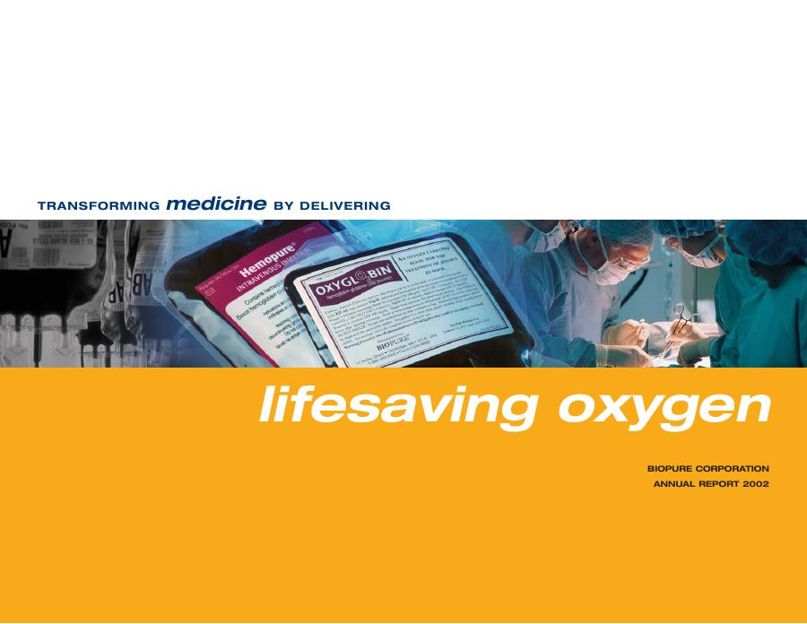

A major regulatory submission
Biopure filed its Hemopure biologic license application on 31 July 2002; FDA accepted it for review in October. Acceptance was a development milestone, not marketing approval. [PDF p. 6]
Biopure Corporation · 2002
Biopure’s 2002 annual report: 115,000+ cumulative Oxyglobin units, Hemopure FDA review, manufacturing, emergency research and Carl W. Rausch.

Biopure filed its Hemopure biologic license application on 31 July 2002; FDA accepted it for review in October. Acceptance was a development milestone, not marketing approval. [PDF p. 6]
The report describes Oxyglobin treatment of Fresno police dog Saxon after a gunshot injury in August 2002. A letter from the police chief credits its role in his recovery. This is a reported case and testimonial, not proof of a general survival benefit. [PDF p. 15]
Biopure reported annual capacity of up to 75,000 Hemopure units and a $908,900 US Army grant for trauma research. Research funding and proposed trauma trials did not constitute approval for prehospital or battlefield use. [PDF p. 14]
For BHOC and Precision Oxygenation Therapeutics, the lesson is practical: oxygen-delivery science must be matched by manufacturing, evidence, regulatory clarity and dependable supply. Historical Biopure achievements are not evidence of approval or efficacy for a present-day BHOC product.
The uploaded report is reproduced unchanged. Page citations use the PDF page number, including front matter. Original report: Biopure Corporation. Commentary: BHOC Platform.